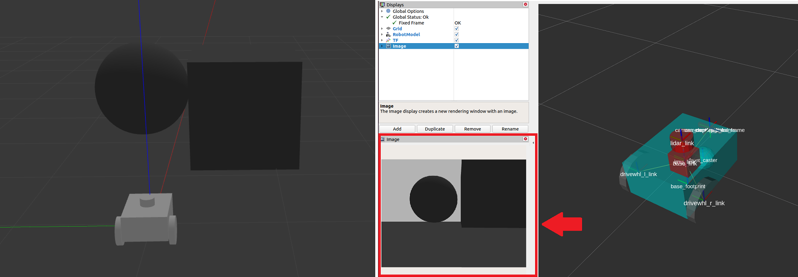

Setting Up Sensors¶
In this guide, we will discuss the importance of the sensors in navigating a robot safely and how to set up the sensors with Nav2. In the first half of this tutorial, we will take a brief look at commonly used sensors and common sensor messages in Nav2. Next, we will add a basic sensor setup on our previously built simulated robot, sam_bot. Lastly, we will then verify the simulated sensor messages of sam_bot by visualizing them in RViz.
Once sensors have been set up on a robot, their readings can be used in mapping, localization, and perception tasks. In the second half of this guide, we will first discuss how mapping and localization use the sensor data. Then, we will also take a look at one of Nav2’s packages, nav2_costmap_2d, which generates costmaps that will eventually be used in Nav2 path planning. We will set up basic configuration parameters for this package so it properly takes in sensor information from sam_bot. Lastly, we visualize a generated costmaps in RViz to verify its received data.
Sensor Introduction¶
Mobile robots are equipped with a multitude of sensors that allow them to see and perceive their environment. These sensors obtain information which can be used to build and maintain the map of the environment, to localize the robot on the map, and to see the obstacles in the environment. These tasks are essential to be able to safely and efficiently navigate a robot through a dynamic environment.
Examples of commonly used sensors are lidar, radar, RGB camera, depth camera, IMU, and GPS. To standardize the message formats of these sensors and allow for easier interoperation between vendors, ROS provides the sensor_msgs package that defines the common sensor interfaces. This also allows users to use any sensor vendor as long as it follows the standard format in sensor_msgs. In the next subsection, we introduce some of commonly used messages in navigation, namely the sensor_msgs/LaserScan, sensor_msgs/PointCloud2, sensor_msgs/Range, and sensor_msgs/Image.
Aside from the sensor_msgs package, there are also the radar_msgs and vision_msgs standard interfaces you should be aware of. The radar_msgs defines the messages for radar-specific sensors while the vision_msgs package defines the messages used in computer vision such as object detection, segmentation, and other machine learning models. Messages supported by this package are vision_msgs/Classification2D, vision_msgs/Classification3D, vision_msgs/Detection2D, and vision_msgs/Detection3D, to name a few.
See also
For more information, see the API documentation of sensor_msgs, radar_msgs, and vision_msgs.
Your physical robot’s sensors probably have ROS drivers written for them (e.g. a ROS node that connects to the sensors, populates data into messages, and publishes them for your robot to use) that follow the standard interface in the sensor_msgs package. The sensor_msgs package makes it easy for you to use many different sensors from different manufacturers. General software packages like Nav2 can then can read these standardized messages and perform tasks independent of the sensor hardware. On simulated robots such as sam_bot, Gazebo has sensor plugins which also publish their information following the sensor_msgs package.
Common Sensor Messages¶
In this subsection, we discuss some of the common types of sensor_msgs you might encounter when setting up Nav2. We will provide a brief description for each sensor, an image of it being simulated in Gazebo and the corresponding visualization of the sensor readings in RViz.
Note
There are other types of sensor_msgs aside from the ones listed below. The complete list of messages and their definitions can be found in the sensor_msgs documentation.
sensor_msgs/LaserScan¶
This message represents a single scan from a planar laser range-finder. This message is used in slam_toolbox and nav2_amcl for localization and mapping, or in nav2_costmap_2d for perception.

sensor_msgs/PointCloud2¶
This message holds a collection of 3D points, plus optional additional information about each point. This can be from a 3D lidar, a 2D lidar, a depth camera or more.

sensor_msgs/Range¶
This is a single range reading from an active ranger that emits energy and reports one range reading that is valid along an arc at the distance measured. A sonar, IR sensor, or 1D range finder are examples of sensors that use this message.

sensor_msgs/Image¶
This represents the sensor readings from RGB or depth camera, corresponding to RGB or range values.
Simulating Sensors using Gazebo¶
To give you a better grasp of how to set up sensors on a simulated robot, we will build up on our previous tutorials and attach sensors to our simulated robot sam_bot. Similar to the previous tutorial where we used Gazebo plugins to add odometry sensors to sam_bot, we will be using the Gazebo plugins to simulate a lidar sensor and a depth camera on sam_bot. If you are working with a real robot, most of these steps are still required for setting up your URDF frames and it will not hurt to also add in the gazebo plugins for later use.
To be able to follow the rest of this section, make sure that you have properly installed Gazebo. You can follow the instructions at the Setup and Prerequisites of the previous tutorial to setup Gazebo.
Adding Gazebo Plugins to a URDF¶
Let us first add a lidar sensor to sam_bot. Open the URDF file, src/description/sam_bot_description.urdf and paste the following lines before the </robot> tag.
251 252 253 254 255 256 257 258 259 260 261 262 263 264 265 266 267 268 269 270 271 272 273 274 275 276 277 278 279 280 281 282 283 284 285 286 287 288 289 290 291 292 293 294 295 296 297 298 299 300 301 302 303 304 305 306 307 308 309 310 311 312 | <link name="lidar_link"> <inertial> <origin xyz="0 0 0" rpy="0 0 0"/> <mass value="0.125"/> <inertia ixx="0.001" ixy="0" ixz="0" iyy="0.001" iyz="0" izz="0.001" /> </inertial> <collision> <origin xyz="0 0 0" rpy="0 0 0"/> <geometry> <cylinder radius="0.0508" length="0.055"/> </geometry> </collision> <visual> <origin xyz="0 0 0" rpy="0 0 0"/> <geometry> <cylinder radius="0.0508" length="0.055"/> </geometry> </visual> </link> <joint name="lidar_joint" type="fixed"> <parent link="base_link"/> <child link="lidar_link"/> <origin xyz="0 0 0.12" rpy="0 0 0"/> </joint> <gazebo reference="lidar_link"> <sensor name="lidar" type="ray"> <always_on>true</always_on> <visualize>true</visualize> <update_rate>5</update_rate> <ray> <scan> <horizontal> <samples>360</samples> <resolution>1.000000</resolution> <min_angle>0.000000</min_angle> <max_angle>6.280000</max_angle> </horizontal> </scan> <range> <min>0.120000</min> <max>3.5</max> <resolution>0.015000</resolution> </range> <noise> <type>gaussian</type> <mean>0.0</mean> <stddev>0.01</stddev> </noise> </ray> <plugin name="scan" filename="libgazebo_ros_ray_sensor.so"> <ros> <remapping>~/out:=scan</remapping> </ros> <output_type>sensor_msgs/LaserScan</output_type> <frame_name>lidar_link</frame_name> </plugin> </sensor> </gazebo> |
In the code snippet above, we create a lidar_link which will be referenced by the gazebo_ros_ray_sensor plugin as the location to attach our sensor. We also set values to the simulated lidar’s scan and range properties. Lastly, we set the /scan as the topic to which it will publish the sensor_msgs/LaserScan messages.
Next, let us add a depth camera to sam_bot. Paste the following lines after the </gazebo> tag of the lidar sensor.
314 315 316 317 318 319 320 321 322 323 324 325 326 327 328 329 330 331 332 333 334 335 336 337 338 339 340 341 342 343 344 345 346 347 348 349 350 351 352 353 354 355 356 357 358 359 360 361 362 363 364 365 366 367 368 369 370 371 372 373 374 375 376 377 378 379 380 381 382 383 384 385 | <link name="camera_link"> <visual> <origin xyz="0 0 0" rpy="0 0 0"/> <geometry> <box size="0.015 0.130 0.022"/> </geometry> </visual> <collision> <origin xyz="0 0 0" rpy="0 0 0"/> <geometry> <box size="0.015 0.130 0.022"/> </geometry> </collision> <inertial> <origin xyz="0 0 0" rpy="0 0 0"/> <mass value="0.035"/> <inertia ixx="0.001" ixy="0" ixz="0" iyy="0.001" iyz="0" izz="0.001" /> </inertial> </link> <joint name="camera_joint" type="fixed"> <parent link="base_link"/> <child link="camera_link"/> <origin xyz="0.215 0 0.05" rpy="0 0 0"/> </joint> <link name="camera_depth_frame"/> <joint name="camera_depth_joint" type="fixed"> <origin xyz="0 0 0" rpy="${-pi/2} 0 ${-pi/2}"/> <parent link="camera_link"/> <child link="camera_depth_frame"/> </joint> <gazebo reference="camera_link"> <sensor name="depth_camera" type="depth"> <visualize>true</visualize> <update_rate>30.0</update_rate> <camera name="camera"> <horizontal_fov>1.047198</horizontal_fov> <image> <width>640</width> <height>480</height> <format>R8G8B8</format> </image> <clip> <near>0.05</near> <far>3</far> </clip> </camera> <plugin name="depth_camera_controller" filename="libgazebo_ros_camera.so"> <baseline>0.2</baseline> <alwaysOn>true</alwaysOn> <updateRate>0.0</updateRate> <frame_name>camera_depth_frame</frame_name> <pointCloudCutoff>0.5</pointCloudCutoff> <pointCloudCutoffMax>3.0</pointCloudCutoffMax> <distortionK1>0</distortionK1> <distortionK2>0</distortionK2> <distortionK3>0</distortionK3> <distortionT1>0</distortionT1> <distortionT2>0</distortionT2> <CxPrime>0</CxPrime> <Cx>0</Cx> <Cy>0</Cy> <focalLength>0</focalLength> <hackBaseline>0</hackBaseline> </plugin> </sensor> </gazebo> |
Similar to the lidar sensor, we create camera_link which will be referenced by the gazebo_ros_camera plugin as the sensor attachment location. We also create a camera_depth_frame that is attached to the camera_link and will be set as the <frame_name> of the depth camera plugin. We also configure the plugin such that it will publish sensor_msgs/Image and sensor_msgs/PointCloud2 messages to /depth_camera/image_raw and /depth_camera/points topics respectively. Lastly, we also set up other basic configuration properties for our depth camera.
Launch and Build Files¶
To verify that the sensors are set up properly and that they can see objects in our environemnt, let us launch sam_bot in a Gazebo world with objects.
Let us create a Gazebo world with a single cube and a single sphere that are within the range of sam_bot’s sensors so we can verify if it can see the objects correctly.
To create the world, create a directory named world at the root of your project and create a file named my_world.sdf inside the world folder . Then copy the contents of world/my_world.sdf and paste them inside my_world.sdf.
Now, let us edit our launch file, launch/display.launch.py, to launch Gazebo with the world we just created. First, add the path of my_world.sdf by adding the following lines inside the generate_launch_description():
world_path=os.path.join(pkg_share, 'world/my_world.sdf'),
Lastly, add the world path in the launch.actions.ExecuteProcess(cmd=['gazebo',... line, as shown below.
launch.actions.ExecuteProcess(cmd=['gazebo', '--verbose', '-s', 'libgazebo_ros_init.so', '-s', 'libgazebo_ros_factory.so', world_path], output='screen'),
We also have to add the world directory to our CMakeLists.txt file. Open CmakeLists.txt and append the world directory inside the install(DIRECTORY…), as shown in the snippet below.
install(
DIRECTORY src launch rviz config world
DESTINATION share/${PROJECT_NAME}
)
Build, Run and Verification¶
We can now build and run our project. Navigate to the root of the project and execute the following lines:
colcon build
. install/setup.bash
ros2 launch sam_bot_description display.launch.py
RViz and the Gazebo will then be launched with sam_bot present in both. In the Gazebo window, the world that we created should be launched and sam_bot should be spawned in that world. You should now be able to observe sam_bot with the 360 lidar sensor and the depth camera, as shown in the image below.

In the RViz window, we can verify if we have properly modeled our sensors and if the transforms of our newly added sensors are correct:

Lastly, we can also visualize the sensor readings in RViz. To visualize the sensor_msgs/LaserScan message published on /scan topic, click the add button at the bottom part of the RViz window. Then go to the By topic tab and select the LaserScan option under /scan, as shown below.

Next, set the Reliability Policy in RViz to Best Effort and set the size to 0.1 to see the points clearer. You should see the visualized LaserScan detection as shown below. This corresponds to the detected cube and sphere that we added to the Gazebo world.

To visualize sensor_msgs/Image and sensor_msgs/PointCloud2, do the same for topics /depth_camera/image_raw and /depth_camera/points respectively:

After adding the /depth_camera/image_raw topic in RViz, set the Reliability Policy in RViz to Best Effort. Then you should see the cube in the image window at the lower-left side of the RViz window, as shown below.

You should also see the sensor_msgs/PointCloud2, as shown below.
Mapping and Localization¶
Now that we have a robot with its sensors set up, we can use the obtained sensor information to build a map of the environment and to localize the robot on the map. The slam_toolbox package is a set of tools and capabilities for 2D Simultaneous Localization and Mapping (SLAM) in potentially massive maps with ROS2. It is also one of the officially supported SLAM libraries in Nav2, and we recommend to use this package in situations you need to use SLAM on your robot setup. Aside from the slam_toolbox, localization can also be implemented through the nav2_amcl package. This package implements Adaptive Monte Carlo Localization (AMCL) which estimates the position and orientation of the robot in a map. Other techniques may also be available, please check Nav2 documentation for more information.
Both the slam_toolbox and nav2_amcl use information from the laser scan sensor to be able to perceive the robot’s environment. Hence, to verify that they can access the laser scan sensor readings, we must make sure that they are subscribed to the correct topic that publishes the sensor_msgs/LaserScan message. This can be configured by setting their scan_topic parameters to the topic that publishes that message. It is a convention to publish the sensor_msgs/LaserScan messages to /scan topic. Thus, by default, the scan_topic parameter is set to /scan. Recall that when we added the lidar sensor to sam_bot in the previous section, we set the topic to which the lidar sensor will publish the sensor_msgs/LaserScan messages as /scan.
In-depth discussions on the complete configuration parameters will not be a scope of our tutorials since they can be pretty complex. Instead, we recommend you to have a look at their official documentation in the links below.
See also
slam_toolbox, see the Github repository of slam_toolbox.nav2_amcl, see the AMCL Configuration Guide.You can also refer to the (SLAM) Navigating While Mapping guide for the tutorial on how to use Nav2 with SLAM. You can verify that slam_toolbox and nav2_amcl have been correctly setup by visualizing the map and the robot’s pose in RViz, similar to what was shown in the previous section.
Costmap 2D¶
The costmap 2D package makes use of the sensor information to provide a representation of the robot’s environment in the form of an occupancy grid. The cells in the occupancy grid store cost values between 0-254 which denote a cost to travel through these zones. A cost of 0 means the cell is free while a cost of 254 means that the cell is lethally occupied. Values in between these extremes are used by navigation algorithms to steer your robot away from obstacles as a potential field. Costmaps in Nav2 are implemented through the nav2_costmap_2d package.
The costmap implementation consists of multiple layers, each of which has a certain function that contributes to a cell’s overall cost. The package consists of the following layers, but are plugin-based to allow customization and new layers to be used as well: static layer, inflation layer, range layer, obstacle layer, and voxel layer. The static layer represents the map section of the costmap, obtained from the messages published to the /map topic like those produced by SLAM. The obstacle layer includes the objects detected by sensors that publish either or both the LaserScan and PointCloud2 messages. The voxel layer is similar to the obstacle layer such that it can use either or both the LaserScan and PointCloud2 sensor information but handles 3D data instead. The range layer allows for the inclusion of information provided by sonar and infrared sensors. Lastly, the inflation layer represents the added cost values around lethal obstacles such that our robot avoids navigating into obstacles due to the robot’s geometry. In the next subsection of this tutorial, we will have some discussion about the basic configuration of the different layers in nav2_costmap_2d.
The layers are integrated into the costmap through a plugin interface and then inflated using a user-specified inflation radius, if the inflation layer is enabled. For a deeper discussion on costmap concepts, you can have a look at the ROS1 costmap_2D documentation. Note that the nav2_costmap_2d package is mostly a straightforward ROS2 port of the ROS1 navigation stack version with minor changes required for ROS2 support and some new layer plugins.
Build, Run and Verification¶
We will first launch display.launch.py which launches the robot state publisher that provides the base_link => sensors transformations in our URDF. It also launches Gazebo that acts as our physics simulator and also provides the odom => base_link from the differential drive plugin, which we added to sam_bot in the previous guide, Simulating an Odometry System Using Gazebo. It also launches RViz which we can use to visualize the robot and sensor information.
Then we will launch slam_toolbox to publish to /map topic and provide the map => odom transform. Recall that the map => odom transform is one of the primary requirements of the Nav2 system. The messages published on the /map topic will then be used by the static layer of the global_costmap.
After we have properly setup our robot description, odometry sensors, and necessary transforms, we will finally launch the Nav2 system itself. For now, we will only be exploring the costmap generation system of Nav2. After launching Nav2, we will visualize the costmaps in RViz to confirm our output.
Launching Description Nodes, RViz and Gazebo¶
Let us now launch our Robot Description Nodes, RViz and Gazebo through the launch file display.launch.py. Open a new terminal and execute the lines below.
colcon build
. install/setup.bash
ros2 launch sam_bot_description display.launch.py
RViz and the Gazebo should now be launched with sam_bot present in both. Recall that the base_link => sensors transform is now being published by robot_state_publisher and the odom => base_link transform by our Gazebo plugins. Both transforms should now be dislpayed show without errors in RViz.
Launching slam_toolbox¶
To be able to launch slam_toolbox, make sure that you have installed the slam_toolbox package by executing the following command:
sudo apt install ros-<ros2-distro>-slam-toolbox
We will launch the async_slam_toolbox_node of slam_toolbox using the package’s built-in launch files. Open a new terminal and then execute the following lines:
ros2 launch slam_toolbox online_async_launch.py
The slam_toolbox should now be publishing to the /map topic and providing the map => odom transform.
We can verify in RViz that the /map topic is being published. In the RViz window, click the add button at the bottom-left part then go to By topic tab then select the Map under the /map topic. You should be able to visualize the message received in the /map as shown in the image below.

We can also check that the transforms are correct by executing the following lines in a new terminal:
ros2 run tf2_tools view_frames.py
Note: For Galactic and newer, it should be view_frames and not view_frames.py
The line above will create a frames.pdf file that shows the current transform tree. Your tranform tree should be similar to the one shown below:

Visualizing Costmaps in RViz¶
The global_costmap, local_costmap and the voxel representation of the detected obstacles can be visualized in RViz.
To visualize the global_costmap in RViz, click the add button at the bottom-left part of the RViz window. Go to By topic tab then select the Map under the /global_costmap/costmap topic. The global_costmap should show in the RViz window, as shown below. The global_costmap shows areas which should be avoided (black) by our robot when it navigates our simulated world in Gazebo.

To visualize the local_costmap in RViz, select the Map under the /local_costmap/costmap topic. Set the color scheme in RViz to costmap to make it appear similar to the image below.
To visualize the voxel representation of the detected object, open a new terminal and execute the following lines:
ros2 run nav2_costmap_2d nav2_costmap_2d_markers voxel_grid:=/local_costmap/voxel_grid visualization_marker:=/my_marker
The line above sets the topic where the the markers will be published to /my_marker. To see the markers in RViz, select Marker under the /my_marker topic, as shown below.

Then set the fixed frame in RViz to odom and you should now see the voxels in RViz, which represent the cube and the sphere that we have in the Gazebo world:
Conclusion¶
In this section of our robot setup guide, we have discussed the importance of sensor information for different tasks associated with Nav2. More specifically, tasks such as mapping (SLAM), localization (AMCL), and perception (costmap) tasks.
We also had a discussion on the common types of sensor messages in Nav2 which standardize the message formats for different sensor vendors. We also discussed how to add sensors to a simulated robot using Gazebo and how to verify that the sensors are working correctly through RViz.
Lastly, we set up a basic configuration for the nav2_costmap_2d package using different layers to produce a global and local costmap. We then verify our work by visualizing these costmaps in RViz.